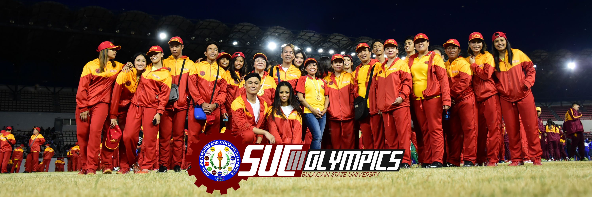

About BulSU

Bulacan State University (BulSU) is a state-funded institution of higher learning established in 1904 and converted into a university in 1993 by virtue of Republic Act 7665. The University in mandated to provide higher professional/technical and special instruction for special purpose and to promote research and extension services, advanced studies and extension services, advanced studies and progressive leadership in Engineering, Architecture, Education, Art and Science, Fine Arts, Information Technology, Technical courses, Commerce, Agriculture, Forestry, Medicine, Law, Public Administration, Fishery, Leather Technology and other courses as circumstance warrants. The University today offers degree programs in the fields of Engineering, Industrial Technology, Arts and Science, Education, Architecture, Fine Arts, Information Technology, Law, Business and Management, Public Administration and Health care.
The University has four campuses located in the province of Bulacan. Its seven-hectare main campus is located in the City of Malolos, the capital of Bulacan. The external campuses are: Bustos Campus in the town of Bustos, Sarmiento Campus in the City of San Jose Del Monte, Meneses Campus in the town of Bulakan. BulSU has a manpower complement of 385 full-time permanent and temporary faculty, 420 part-time faculty, 92 regular academic support personnel and 127 employees-by-job-order. As of the first semester of school year 2009, 2010, the university has a total enrolled student of 24,069.
Integral to the delivery of quality tertiary-level education service, BulSU conducts surveys and applied research and performs many public service functions through its research and extension programs and linkages with various stakeholders. Its Center for Local Governance is one of the most active governance skills resource centers in the country. The Department of Science and Technology (DOST) has selected the University as the Provincial Science and Technology Center. In partnership with DOST, BulSU operates a Food Testing Laboratory which serve the food processing industry of the region. Recognizing the accomplishment of the region. Recognizing the accomplishments of the University as a technology and teacher training institution, the Commission on Higher Education cited it as Center of Development for Mechanical and Electrical Engineering. The University's Center for Bulacan Studies actively pursue research on the history and culture of the province and promotes community-oriented projects.
Vision and Mission
Vision
Bulacan State University is a progressive knowledge-generating institution globally recognized for excellent instruction, pioneering research, and responsive community engagements
Mission
Bulacan State University exists to produce highly competent, ethical and service-oriented professionals that contribute to the sustainable socio-economic growth and development of the nation